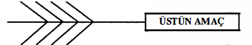
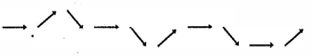
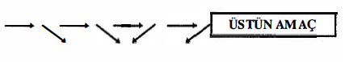
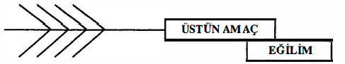

Tortsov, bugünkü derse aşağıdaki sözlerle başladı:
“Dostoyevski, Karamazov Kardeşler'i, ömrü boyunca süren, Allah'ı arama çabası yüzünden yazmak zorunda kaldı. Tolstoy, bütün yaşamını, benliğini kusurlarından arıtma yolunda savaşarak tüketti. Anton Chekov, burjuva yaşayışının bayağılığı ile uğraştı, bu bayağılık, çoğunlukla, yazınsal ürünlerinin leit motiv'i oldu.”
“Büyük yazarların, bu daha büyük dirimsel amaçlarının, bir aktörün bütün yaratıcı yetilerini kendine çekme ve bir piyesin ya da bir rolün bütün ayrıntıları ile daha küçük birimlerini içine alma gücünde olduğunu hissedebiliyor musunuz?”
“Aktörün, bir piyesteki bütün bireysel, küçücük amaçları, bütün imgesel düşünceleri, duyguları ile eylemleri, entrikanın üstün–amacını gerçekleştirmeye yönelmelidir. Genel bağ öylesine güçlü olmalı ki, üstün–amaçla ilgisi bulunmayan en önemsiz ayrıntı bile, gereksizliği ya da yanlışlığı yüzünden dışta kalabilsin.”
“Ayrıca, üstün–amaca doğru bir sürükleyici güç bütün piyes boyunca sürüp gitmelidir. Bu gücün kökeni, gösterişçilik ve baştan savmacılık olduğu zaman, piyese ancak yaklaşık olarak doğru bir yön verecektir. İnsanla ilintili ve piyesin temel amacının yerine getirilmesine doğru yönelmiş olduğu zaman da, tıpkı temiz kan taşıyan anadamar gibi, her ikisine de, aktörlere de besin ve can sağlayacaktır.”
“Şunu da belirtelim ki, bir yapıtın yazınsal değeri ne kadar büyükse, üstün–amacının çekiciliği de o kadar büyüktür.”
“Peki, bir piyeste hiç deha izi yoksa, o zaman?”
“O zaman çekicilik daha zayıf olacaktır elbet.”
“Ya kötü bir piyeste?”
“O zaman da, üstün–amacı aktörün kendisi belirtmek, derinleştirip keskinleştirmek zorunda kalacaktır. Bunu yaparken, o amaca vereceği adın çok büyük önemi vardır.”
“Bir amaç için seçilecek adın ne kadar önemli olduğunu önceki derslerimizden bilirsiniz. Eyleme daha çok hız vermesi yüzünden, böyle bir ad için eylemi üstün tuttuğumuzu da hatırlarsınız. Daha büyük bir ölçüde de olsa, aynı şey, üstün–amacı belirlemek için de doğrudur.”
“Diyelim ki, Griboyedov'un, Woe From Too Much Wit — Aklın Çoğu Başa Beladır adlı eserini sahneye koyuyoruz ve bu piyesin asıl amacının da ‘Sophy'yi elde etmek istiyorum’ sözleriyle özetlenebileceğine karar veriyoruz. Entrikada bu özeti destekleyecek pek çok şey var. Ama, piyesi, içindeki toplumsal suçlama temasını, sadece önemsiz bir olayla ilintili, gelgeç değerde gösterecek bir açıdan ele almak da doğru değildir. Öte yandan, üstün–amacı, 'Ben savaşmak istiyorum, Sophy için değil, yurdum için!' sözleriyle de özetleyebilirsiniz. İşte o zaman, Chatski'nin, yurduna ve halkına karşı beslediği ateşli sevgi ön plana geçecektir.”
“Aynı zamanda, toplumu suçlama teması da bütün piyese daha derin bir iç anlam katarak, daha belirgin bir hal almış olacaktır. Ana temayı, 'Ben özgürlük için savaşmak istiyorum' diye özetlerseniz, o zaman, piyesin anlamını daha da derinleştirebilirsiniz. Piyes böyle bir açıdan ele alındığında, kahramanın suçlamaları daha amansız bir hale gelebileceği gibi, temin Sophy ile birleşmesinden doğan kişisel, bireysel anlam da bütünü ile yok olur gider; hatta piyes ulusal olmaktan da çıkarak, kapsadığı düşünceler yüzünden daha geniş insansal ve evrensel bir anlam kazanır.”
“Ben kendi yaşayışımda, üstün–tema için doğru ad seçmenin önemi üzerine çok daha canlı kanıtlar bulmuşumdur. Bunlardan biri, Moliere'in Hastalık Hastası'nı oynarken bulduğum kanıttır. Bu piyesi önce ilkel bir anlayışla ele almış ve temasını da, 'hasta olmak istiyorum' sözünde sınırlamıştık. Gelgelelim, piyese emek verdikçe, oyunda başarı kazandıkça, hoşa giden, sevimli bir komediyi hastalıkla ilgili bir tragedya haline getirmekte olduğumuz daha belirgin olarak kendini göstermeye başladı. Yanlış yolda olduğumuzu hemen gördük, bunun üzerine, temayı, 'hasta sanılan biri olmak istiyorum' şeklinde değiştirdik. O zaman, piyesin komik yönü bütünü ile yüze çıktığı gibi, Moliere'in demek istediğine uygun olarak, Argan gibi budalaları sömüren tıp dünyasının şarlatanlarının da maskelerini düşürmeye yardım edecek temel de atılmış oldu.”
“Goldoni'nin La Lacandiera adlı piyesinde de, temayı, 'Ben bir kadın düşmanı olmak istiyorum'– diye belirleyerek gene aynı yanlışlığa düştük. Böylece, piyesin ince alaya da, eyleme de olanak vermediğini gördük. Ancak, ben, aslında kahramanın kadınları sevdiğini, sadece kadın düşmanı görünmek istediğini keşfedip de, temayı, 'Ben çapkınlığımı el altından yapmak istiyorum' biçiminde değiştirince, piyes birden canlandı, hareketlendi.”
“Bu son örnekte sorun piyesin bütününden çok benim rolümle ilgiliydi. Bununla birlikte, Otelci Kadın'ın gerçekte, yaşamımızın kadını, başka bir deyişle, tam kadın olduğunu, ancak sürekli bir çalışma sonunda anladığımız zaman, piyesin iç anlamı bütünü ile belirip yüze çıktı.”
“Çoğunlukla, bir piyesi sahneye koymadıkça, onun ana teması üzerinde kesin bir sonuca varamıyoruz. Kimi zaman da temanın doğru tanımını anlamamıza seyirci yardım etmektedir.”
“Ana tema, oyun boyunca, aktörün zihninde kesinlikle belirlenmiş olmalıdır. Piyesin yazılmasına esas olan ana temadır. Aktörün sanatlı yaratmasının esası da, gene ana tema olmalıdır.”
Yönetmen, bugün, bir piyesin asıl iç akımının, aktörün, bütün entrikaları geliştirmesini, böylece, temel amacı açık seçik olarak ortaya koymasını sağlayan derinlemesine bir kavrayış üstün–amaca doğru yöneltir. Sonra da hepsi elbirliği ile genel amaca hizmet ederler.”
“Bu baştan sona eylem ile üstün–amaç'ın bizim yaratıcı çabamızdaki büyük pratik önemini tastamam belirtme yolunda size verebileceğim en inandırıcı kanıt, kendi başımdan geçen bir olaydan alınmıştır. Pek ünlü bir aktris, bizim aktörlük sistemimize karşı ilgi duymuş, kendisini bu yeni sistemde yetkinleştirmek isteği ile, bir süre, sahneden ayrılmaya karar vermiş. Birkaç yıl çeşitli öğretmenlerle çalışmış. Sonra, yine sahneye dönmüş.”
“Dönmüş ama, şaşılacak şey, bir daha da başarı elde edemez olmuş. Seyirci, aktrisi, en değerli niteliğinden, esin coşkunluğundan yoksun bulmuş. Bunun yerini, kuruluk, doğalcı ayrıntı, baştan savma oyun biçimleriyle buna benzer kusurlar almış. Bu aktrisin, içine düştüğü durumu, ne hale geldiğini kolayca tasarlayabilirsiniz. Sahneye her çıkışında sanki bir sınavdan geçiyormuş gibi gelirmiş kendisine. Bu hal oyununu engeler, dikkatini toplamasını gittikçe güçleştirir, korkusunu hemen hemen umutsuzluğa çevirir. Başkentin seyircileri belki bu 'sistem'e karşı düşman ya da ön yargılıdırlar diye düşünerek, tutar, kendini bir de çeşitli taşra tiyatrolarında dener. Dener ama, nereye giderse gitsin, sonuç gene değişmez. Bunun üzerine, zavallı aktris, bu yeni sistemi lanetlemeye başlar, ondan kurtulmaya çalışır. Yeniden ilk oyun biçimine dönmeye uğraşırsa da, bu kez onu da beceremez. Yapma ustalığını yitirmiş, gerçekten üstün görerek benimsediği bu yeni sistem karşısında o eski oyun biçiminin saçmalıklarına artık dayanamaz hale gelmiştir. Böylece, aktris, iki arada bir derede kalır. Söylediklerine göre, sahneyi bütün bütün bırakmaya bile karar verir.”
“İşte bu sıralarda, o aktrisin bir oyununu seyretmek fırsatı geçti elime. Oyundan sonra, onun ricası üzerine, giyinme odasına gittim. Perde kapandıktan, tiyatroda kimsecikler kalmadıktan çok sonra bile, beni bırakmadı, umutsuzluk içinde bir coşkuyla, kendisinde meydana gelen bu değişikliğin nedenini açıklamamı yalvararak rica etti. Bütün ayrıntıları ile, rolünün nasıl hazırlandığını, ’sistem'i incelemesi sırasında kazanmış olduğu bütün teknik donatımı bir bir gözden geçirdik. Hepsi doğru idi. Sistemi her yönü ile anlamıştı. Gelgelelim, sistemin yaratıcı temelini, bir bütün olarak, kavramamıştı. Kendisini, baştan sona eylem çizgisi ile üstün–amaç konusunda sorguya çektiğimde, genel olarak bunlardan söz edildiğini işitmiş olduğunu, ama hiçbir pratik bilgisi bulunmadığını itiraf etti.”
“Eğer bir rolü, bu baştan sona eylem çizgisini göz önünde bulundurmadan oynayacak olursanız” dedim, 'sistemin sadece, birbirini tutmayan kesimlerindeki birtakım alıştırmaları yapmış olmaktan öteye geçemezsiniz. Bu alıştırmalar sınıfta yapılan çalışmalarda yararlıdır, ama bir rolün baştan sona oyununda yararlı değildir. Bütün bu alıştırmaların asıl amacının, temel yön çizgileri ortaya koymak olduğunu, bu önemli gereci geçiştirmişsiniz. Rolünüzün göz alıcı güzellikteki kesimlerinin hiçbir etki uyandırmayışının nedeni budur. Parçalayın güzel bir heykeli, elde edeceğiniz küçük mermer parçaları hiçbir zaman heykelin etkisini bastıramaz.”
“Ertesi gün, provada birimleriyle amaçlarını, rolünün ana temasına ve yönüne göre nasıl hazırlayacağını gösterdim.”
“Tutku ile çalışmaya koyuldu, yardımlarımı birkaç gün tavsatmamamı istedi. Çalışmasını her gün denetledim, sonunda, rolünü, bu yeni ruhla oynayışını bir daha görmek üzere kalktım, tiyatroya gittim. Akla sığmaz bir başarı kazandı. O akşam tiyatroda neler olduğunu anlatamam size. Bu yetenekli aktris, yıllarca çektiği bütün acıların, umutsuzlukların ödülünü bir anda almıştı. Kollarımın arasına atıldı, öptü beni, sevinçten ağladı, yeteneğini ona yeniden kazandırdığım için teşekkürler etti. Güldü oynadı, zıpladı, çekilip gitmesine bir türlü izin vermek istemeyen seyirci karşısına sayısız kez selama çıktı.”
“İşte bu olay, baştan sona eylem çizgisi ile üstün amacın tansık yaratma, can üfleme niteliğini apaçık ortaya koymaktadır.”
Tortsov, birkaç dakika durup düşündükten sonra, dedi ki: “Bunu size çizgilerle göstermem belki daha iyi olur.”
İşte çizdikleri:

Baştan Sona Eylem Çizgisi
“Küçük çizgilerin hepsi aynı amaca yönelmiş ve ana akımın içinde erimiştir” diye açıkladı.
“Şimdi de, rolünün küçük çizgileri değişik yönlere giden ve asıl amacını belirlememiş olan bir aktörün durumunu ele alalım. O zaman şu çizgiler karşımıza çıkar:

“Eğer, bir rolün içindeki bütün küçük amaçlar değişik doğrultulara yönelmişse, o zaman, kesintisiz, başı bütün bir çizgi elde etmek, olanaksız hale gelir. Bunun sonucu olarak da, eylem, bütünleşecek yerde, bölük pörçük, düzensiz, ilgisiz olup çıkar. Bir rol kendi başına ne derece kusursuz olursa olsun, bu duruma geldiğinde, piyesin içinde yeri kalmamış demektir.”
“Size başka bir durumdan daha söz edeyim. Piyesin ana eylem çizgisi ile ana temasının organik olarak birbirleriyle kaynaşmış olduğu, piyese zarar vermeksizin bunlara aldırmazlık edemeyeceğimiz noktasında' düşünce birliğine varmıştık. Ama, tutun ki, piyesin içine, piyesle ilgisi olmayan bir tema ya da eğilim adını verebileceğiniz bir şey katıyoruz. Öteki ögeler, oldukları gibi kalsalar da, bu yeni katkı ile amaçlarından sapıtılmış olurlar. Bunu şöylece belirtebiliriz:

EGİLİM
“Böyle, çarpık çurpuk, belkemiği kırık bir piyes yaşayamaz.”
Grisha, bu görüşe şiddetle karşı koydu.
“Ama, böylece, yönetmenleri de bireysel yaratıcı yeteneğe ve yapıcılık gücüne sahip aktörleri de, yenilenme olanağı bulunan eski baş yapıtları da çağdaş zamanların ruhuna yaklaştırmakla, onlardan bir şeyler çalmış olmuyor musunuz?” diye patladı.
Tortsov'un karşılığı soğukkanlıydı, açıklayıcıydı:
“Siz ve sizin gibi düşünen pek çokları, şu üç sözcüğün anlamını çoğunlukla birbirine karıştırır ve de yanlış anlarlar: Ölümsüz, çağdaş, geçici. Eğer bu sözcüklerin anlamını doğru olarak kavramak isterseniz, o zaman, insanoğlunun tinsel değerlerini birbirinden iyice ayırt edebilmelisiniz.”
“Çağdaş olan, özgürlük, adalet, aşk, mutluluk, büyük sevinç, büyük acı gibi sorunlarla uğraşırsa, ölümsüz olabilir. Bir piyes yazarının yapıtındaki bu çeşit çağdaşlığa hiçbir diyeceğim yok.”
“Öte yandan, bunun tam karşıtı da, geçici olanın hiçbir zaman ölümsüz olamayacağıdır. Geçici olan, ancak bugün ve yarın yaşar, sonra unutulur. Yönetmen ne kadar işinin ustası, aktörler ne derece yetenekli olurlarsa olsunlar, dışa dönük bir sanat yapıtının, geçici olanla hemen hiçbir ilgisi bulunmayışının nedeni işte budur.”
“Yaratıcı çalışmada zora başvurmak her zaman fenadır, bu yüzden, eski bir temayı gelgeç bir vurgu ile tazelemeye kalkmak, piyesi de, rolü de doğrudan doğruya öldürmek demektir. Bununla birlikte, çok seyrek örneklerle karşılaştığımız da doğrudur. Bu tür meyvenin başka türde bir meyve ağacına arada sırada aşılanabildiğini, ondan da yeni bir meyve elde edildiğini biliyoruz.”
“Kimi zaman, eski klasik bir yapıta çağdaş bir düşünce kolaylıkla aşılanabilir ve o düşünce o yapıtı yenileyebilir. Bu durumda,. yapılan ekleme, ana temanın içinde erir:

“Bundan çıkarılacak sonuç şudur: Kendi üstün amacınızı ve baştan sona eylem çizginizi her şeyin üstünde tutun. Ana temaya yabancı olan ve dıştan gelen her türlü eğilimlerle amaçlardan sakının.”
“Eğer bu iki şeyin olağanüstü önemini sizlere iyice anlatabildimse, gönül rahatlığına ereceğim. Çünkü, bir öğretmen olarak asıl amacıma eriştiğime, sistemimizin ana temellerinden birini açıklamış olduğuma ancak o zaman inanacağım.”
Uzun bir susuştan sonra, Tortsov sözlerine şunları ekledi:
“Her etki, kendisini şiddetlendiren bir tepki ile karşılaşır. Her piyeste, ana eylemin yanı sıra, ona karşıt olan karşı–eylemi de buluruz. Bereket ki, bu böyle, çünkü, bunun kaçınılmaz sonucu olarak daha çok eylem doğar. Amaçlarının bu çatışması, bu çatışmadan meydana gelen bütün sorunların çözülmesi bizim için gereklidir. Bunlar, sanatımızın temeli olan canlılığı yaratır.”
“Bir örnek olarak Brand'ı ele alalım:”
“Diyelim ki, Brand'ın parolası 'ya hep, ya hiç'tir ve bu parola (ister doğru, ister yanlış olsun, bu nokta şimdilik konumuzun dışında) piyesin ana amacını göstermektedir. Bu türlü bağnaz, temel bir ilke dehşet vericidir. Yaşamda kendi ideal amacını gerçekleştirme yolunda hiçbir anlaşmaya, hiçbir uzlaşmaya, hiçbir gevşemeye yanaşmaz çünkü.”
“Şimdi, bu ana temayı, piyesteki daha küçük çeşitli birimlerle, vaktiyle sınıfta üzerinde çalışmış olduğumuz, o, Agnes ile bebek giysileri sahnesi ile birleştirmeye uğraşayım. Eğer bu sahneyi, zihin yolundan giderek, 'Ya hep, ya hiç!' ana teması ile uzlaştırmaya çalışırsam, ne yapar eder, düş kurma gücümü zorlamak suretiyle ikisini birbirine yaklaştırabilirim.”
“Tepki çizgisini, ya da karşı–eylem çizgisini simgeleştiren Agnes'in, yani annenin görüşünü benimsersem, bu, çok daha uygun olur. Agnes, ana temaya başkaldırma halindedir.”
“Eğer bu sahnede Brand'ın rolünü çözümleyecek olursam, karısının ödev karşısındaki özverisini, bebeğin giysilerinden vazgeçerek tamamlamasını istediği için, o rolün ana temayla ilişkisini bulmak kolaylaşır. Bir bağnaz olarak, Brand, kendi ideal yaşayışı uğrunda, karısının, nesi var, nesi yok, her şeyinden vazgeçmesini ister. Agnes'in karşı–eylemi, Brand'ın dolaysız eylemi ile sadece şiddetlenmiş olur. İşte burada, iki ilkenin birbiriyle çatıştığını görürüz.”
“Brand'ın görevi, annenin aşk'ı ile çatışmaktadır; bir düşünce, bir duygu ile, bir dinsel öğütçü, acı çeken bir anne ile; erkek ilke, dişi ilke ile savaşmaktadır.”
“Bu yüzden, bu sahnede, baştan sona eylem çizgisi Brand'ın, karşı-eylem çizgisi de Agnes'in ellerindedir.”
Tortsov, “Şimdi” dedi, “lütfen beni bütün dikkatinizle dinleyin, çok önemli bir şey söyleyeceğim çünkü!”
“Bu ilk kursta, bütün çabamızı, yaratıcı davranışımızda yer alan şu son derece önemli üç özelliği denetleme gücünü kazanmanız uğrunda gösterdik:
(1) İçten kavrama
(2) Baştan sona eylem çizgisi
(3) Üstün–amaç.”
Uzun bir susuşma oldu, sonra, Tortsov, şu sözlerle dersi bağladı:
“Bütün bu noktaları, şöyle, kuşbakışı bir gözden geçirmiş' olduk. 'Sistemimiz' sözü ile ne demek istediğimizi, bundan böyle anlarsınız sanırım.”
* *
Kursumuzun birinci yılı hemen hemen sona ermek üzere. Ben esin ummuştum, ama bu “Sistem” umutlarımı paramparça etti.
Tiyatronun holünde paltomu sırtıma geçirip boyun atkımı usul usul boynuma dolarken, bu düşünceler de kafamın içinde koşturup duruyordu.
Ansızın biri dürttü. Döndüm ki, Törtsov.
Halimdeki yıkıklık dikkatini çektiği için, bunun nedenini keşfetmeye gelmiş. Ben, kaçamaklı bir karşılık verdimse de, soru üstüne soru yağdırarak yakamı bırakmadı.
“Sistem” yüzünden duyduğum huzursuzluğun iç yüzünü anlamak çabası ile, “Sahne üzerine çıktığınız zaman şimdi ne hissediyorsunuz?” diye sordu.
“Sadece azap. Olağanın dışında hiçbir şey hissetmiyorum. Rahatım, ne yapacağımı biliyorum, sahne üzerinde bulunmamın bir amacı var, eylemlerime güveniyorum, sahne üzerinde bulunmaya hakkım olduğuna inanıyorum.”
“Daha ne istiyorsunuz? Sizce bu yanlış mı?”
Bunun üzerine, esine karşı duyduğum özlemi itiraf ettim.
“Bunun için bana gelmeyin. Benim “Sistem”im hiçbir zaman esin fabrikası değildir. Benim sistemim, ancak, esin için elverişli bir temel hazırlayabilir.”
“Ben sizin yerinizde olsaydım, bir düşün, yani esinin peşinde koşmaktan vazgeçerdim. Esini, tansık yaratan yerine, doğaya bırakın ve kendinizi, insanın bilinç alanındaki gizlerini denetlemeye verin.”
“Bir rolü yolun doğrusuna yerleştirin, o kendi kendine ilerler. Giderek gelişir, derinleşir, sonunda da esine erişir.”